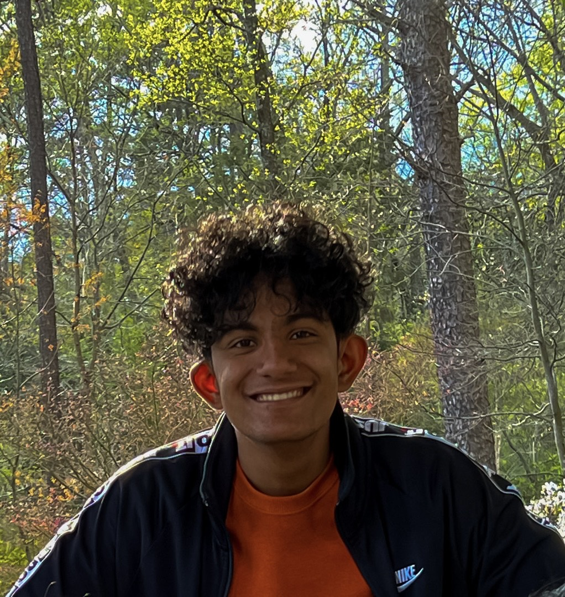

Hey, I'm Ayush Adhikari
I'm currently a first-year at Northeastern University, majoring in Computer Science and minoring in Economics.
I have experience working with Python, Java, Ubuntu, and DrRacket. Alongside programming languages, I am also well-versed in Microsoft Office, especially Microsoft Excel.
Interests and Hobbies
Photography
I have been pursuing Photography as a casual hobby since November 2021. While I mostly just use my iPhone 12, I enjoy taking photos of the sunset, skyline, celestial objects, and airplanes.
Here are some of my favorite photos. All photos are taken and edited by me.
Astronomy
I have always been fascinated by Astronomy since childhood.
During high school, I was the founder and president SPACE Club, one of the largest STEM clubs in Cox Mill High School with over 30 members.
At home, I have an Orion XT-6 Dobsonian Telescope and enjoy using it for Astrophotography.
Aviation
Alongside Astronomy, Aviation is another interest of mine which developed early childhood. I enjoy Planespotting and Flight Simulators such as GeoFS.
Depending on where I am, you will often see me at Consituiton Beach in Boston or the Airport Overlook at Charlotte Douglas, usually carrying a Nikon Aculon A211 8x42.
In my free time, you will often find me working on Projects, watching Documentaries (usually about World History), going on walks, lifting at the gym, or playing on the Nintendo Switch with my friends.
Additional Information:
I am bilingual in Nepali and English, strongly proficient at Hindi, and have limited proficiency in Urdu.
I have Certifications in AutoCAD from AutoDesk and Introduction to Programming Using Python from Microsoft.
Resume